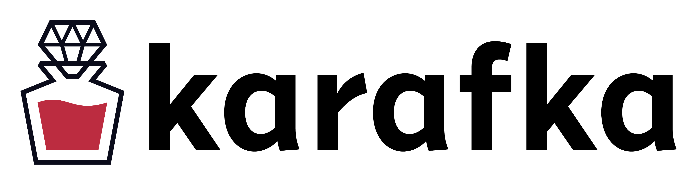

World beyond HTTP
Maciej Mensfeld
twitter: @maciejmensfeld
www: mensfeld.pl
e-mail: maciej@mensfeld.pl
$ whoami
- 9 years of commercial exp in IT
- 7 years with Ruby and Rails
- Krakow Ruby User Group (KRUG) organizer
- Interested in quality-assurance automation tools
- Running a blog about programming
- Did a lot of management stuff
- Currently building something on my own
Please notify me if...
- I speak 2 fast
- I should repeat something
- I should explain something better
- You have any questions
Almighty HTTP
Before we go beyond something, it might be good to understand what it is
“The Hypertext Transfer Protocol (HTTP) is an application protocol for distributed, collaborative, hypermedia information systems. HTTP is the foundation of data communication for the World Wide Web.”
I <3 HTTP
HTTP is simple and flexible
We all use it all the time
It is the underlying cause for HTTP Status Cats API Website
http://http.cat

We could not live without it as we do
If it is that good and convenient, why go beyond that?
Familiarity can blind you
And this is what happened to me...
Ladies and gentlemen: the mess

First you get the feeling, then you figure out why
Why should I even care?
(apart from the obvious business reasons)
Quality matters
Care and Quality are internal and external aspects of the same thing. A person who sees Quality and feels it as he works is a person who cares. A person who cares about what he sees and does is a person who’s bound to have some characteristic of quality.
But this was meant to be a technical talk, not a philosophical one...
But programming is a form of art and before you fix something, you need to know what the problems are
- Performance
- Eventual consistency (that might never happen)
- Operational complexity
- Multiple API clients overhead
There is an infinite number of solutions for each problem
But you need to pick one
and sometimes picking a proper solution to a problem, can solve many more
Many problems with SOA come from heavily relying on HTTP and synchronius requests that...
aren't really synchronius
I would not call chain of requests that get buffered somewhere or that trigger background jobs synchronous
Often HTTP in SOA is like some talks we have in our lifes
Life is not synchronous
So why our software should be?
Let's clean this mess by going beyond HTTP
Finally...
It really is about messaging

What is Apache Kafka?
- Kafka is a high-throughput distributed messaging system
- Kafka is designed to allow a single cluster to serve as the central data backbone for a large organization
- It can be elastically and transparently expanded without downtime
- It provides broadcasting to many applications
- Allows to build systems that are event based
Who uses Apache Kafka?
Linkedin (650 terabytes of consumed messages daily), Yahoo, Twitter, Netflix, Square, Spotify, Pinterest, Uber, Onet, Tumblr, Cisco, Foursquare, Shopify, Oracle, Urban Airship, OVH, ...
Multiple API clients overhead
Without a broker you need to add code to both ends of your SOA system
Multiple API clients overhead
With a broker all you need to know is topic on which you want to listen and a message format
Kafka + Ruby
What is Karafka?
- Karafka = Kafka + Ruby => KaR(uby)afka
- A microframework
- It was designed to simplify Kafka based applications development
- It allows developers to build "Rails like" apps that consume and produce messages
Why Karafka was developed?
- We needed a tool that would allow us to build applications faster
- We needed a tool that would allow us to process faster
- We needed a tool that would allow us to handle events and messages from many sources and process them the same way
- Because single message can be automatically delivered to many Karafka applications
But we have HTTP and REST, why go beyond?
- o provide broadcasting, not being a part of HTTP standard
- To trigger many actions based on a single event
- To not maintain internal API clients
- Without a broker it is harder to replace microservices transparently
- Better microservices isolation
- You can create new microservices that use multiple different events from many sources
Karafka uses goods that are already well known
- Poseidon as a consumer (soon 2 be switched to Ruby-Kafka)
- Celluloid introducing sockets clustering inside threads
- Sidekiq to support background data processing
- Rails app structure concept for bigger apps
- Sinatra app structure concept for small apps
How can I start using it?
# Gemfile
source 'https://rubygems.org'
gem 'karafka', github: 'karafka/karafka'
bundle install
bundle exec karafka install
Then open app.rb and update configuration settings
All the configutation options are described here:
github.com/karafka/karafka
Karafka conventions and features
Karafka has a routing engine similar to Rails
App.routes.draw do
topic :incoming_messages do
group :composed_application
controller Videos::DetailsController
worker Workers::DetailsWorker
end
# If you work with JSON data, only controller is required
topic :new_videos do
controller Videos::NewVideosController
end
end
Karafka controllers and workers
NewVideosController #=> NewVideosWorker
Users::PaymentsController #=> Users::PaymentsWorker
Karafka by default builds a worker class per controller based on a controller name. This allows to prioritize (if needed) Sidekiq workers
You can overwrite default behaviours
# If you work with JSON data, only controller is required
topic :new_videos do
controller Videos::NewVideosController
# Instead of a default Videos::NewVideosWorker
worker Videos::DifferentWorker
end
end
#perform
Karafka controllers are simple. All you need is a #perform method that will be executed asynchronously in response to an incoming message
class CreateVideosController < Karafka::BaseController
def perform
Video.create!(params[:video])
end
end
#before_enqueue filter
Acts in a similar way to Rails #before_action
class CreateVideosController < Karafka::BaseController
before_enqueue -> {
# Reject old incoming messages
# When before_enqueue returns false,
# task won't be send to Sidekiq
return false if params[:sent_at] < 1.minute.ago
}
end
It can be used to provide first layer data filtering. If it returns false, Sidekiq task won't be scheduled
CLI
There are also few usefull CLI commands available:
bundle exec karafka [COMMAND]
help # Describe available commands or one specific command
console # Start the Karafka console (short-cut alias: "c")
info # Print configuration details and other options
install # Install all required things for Karafka application
routes # Print out all defined routes in alphabetical order
server # Start the Karafka server (short-cut alias: "s")
topics # List all topics available on Karafka server
worker # Start the Karafka Sidekiq worker
Karafka performance
- Is strongly dependent on what you do in your code
- Redis performance (for Sidekiq) is a factor as well
- Message size is a factor
- Single process can handle around 30 000 messages/sec
- Less than a ms to send a message with the slowest (secure) mode (Kafka request.required.acks -1)
- Less than 1/10 of a ms to send a message with in the 0 mode (Kafka request.required.acks 0)
Karafka framework scalability
Each scaling strategy targets a different problem
Scaling strategies can be combined
Following strategies are available:
- Scaling using multiple Karafka threads
- Scaling using Kafka partitions
- Scaling using Karafka clusterization (in progress)
I want to integrate it with my Rails/Sinatra app
- The best approach is to start generating messages from your current applications
- Messaging allows you to tell your Karafka apps what your other Ruby components are doing
def create
video = Video.create!(params[:video])
WaterDrop::Message.new(:video_created, video.to_json).send!
respond_with video
end
- Once you start sending messages, you can extract functionalities and responsibilities and move them to Karafka based applications
so back to the big question:
Why to go beyond?
One geometry cannot be more true than another; it can only be more convenient. Geometry is not true, it is advantageous.
and the same applies to IT technologies
Going beyond your comfort zone can provide you with better solutions for current and upcoming problems.
WANT TO CONTRIBUTE?
- The more people star it, the more people use it
- The more people use it, the more people star it
- There are many issues you can help us fix
- We use many QA tools to maintain the quality